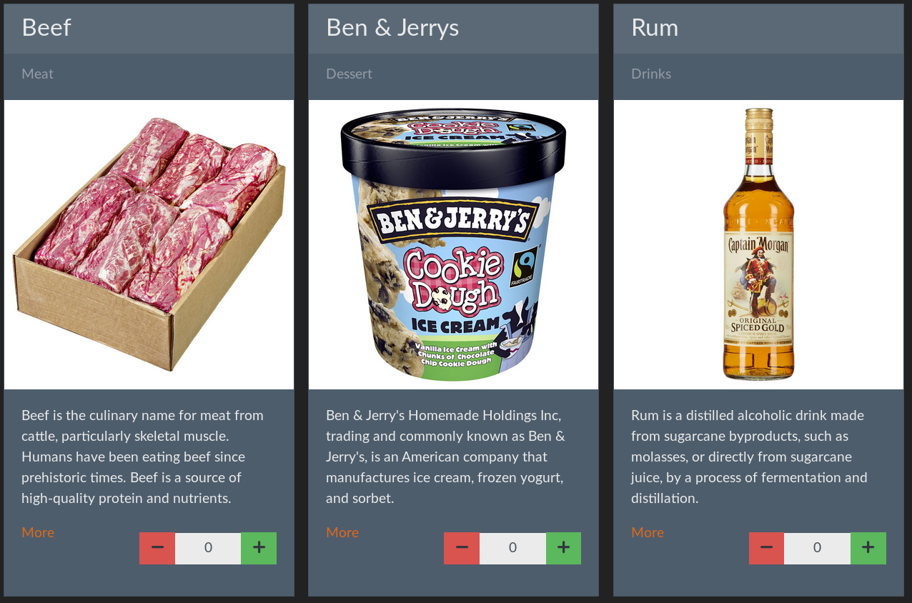

No Pain - No Gain |
Simplicity
Interop
LISP
Functional
(+ 1 2)
=> 3
=> 3
Polyglot programming:
 <=>
<=>

Easy since 1958 / REPL / Collections & Lists
Immutability / Pure Funcs / Small Modules
-
(map cook [🐮 🥔 🐔 🌽])
=> [ 🍔 🍟 🍗 🍿 ]
-
(filter isVegetarian [🍔 🍟 🍗 🍿])
=> [ 🍟 🍿 ]
-
(reduce eat [🍔 🍟 🍗 🍿])
=> 💩
Powered by https://github.com/viebel/klipse
| 42 1.3 4/3 | Numbers |
| "f" "oo" "bar" | Characters & Strings |
| :foo :bar | Keywords |
| [] '() #{} {} | Collections (Vector, List, Set, Map) |
| nil true false | Scalar values |
-
(def x 42)
x
=> 42
-
(defn square [num] (* num num))
(square 4)
=> 16
-
(map square [1 2 3])
=> (1 4 9)
-
(reduce + (map square [1 2 3]))
;(reduce (+ [1 2 3]))
=> 14
😞
->
Request
->
Web Server
->
Route
->
DB
|
↓
Web Server
<-
HTML/CSS/JS
<-
Response
<-
🥳
Pedestal & Component
Korma
Hiccup
Ring
Pedestal
Libraries for backend & API first
＋
＝
Component
- Immutable data structure
- Managed lifecycle of stateful objects
- Relationships to other components
Korma
It's just tasty SQL for Clojure!Ring
- Simple
- Abstracts HTTP
- Functions for handling
parameters, cookies and more

Hiccup
- Representing HTML
- Vectors for elements
- Maps for attributes
😞
->
Request
->
Web Server
->
Route
->
DB
|
↓
Web Server
<-
HTML/CSS/JS
<-
Response
<-
🥳
Pedestal & Component
Korma
Hiccup
Ring
Amazing Web Shop
 https://github.com/tbsschroeder/clojure-webshop-appYou'll find me at the booth!
| and : |
@tbsschroeder @joinmetronomnow |
#METRONOMians
#codetalkshh
#passion
#ambition
#purpose